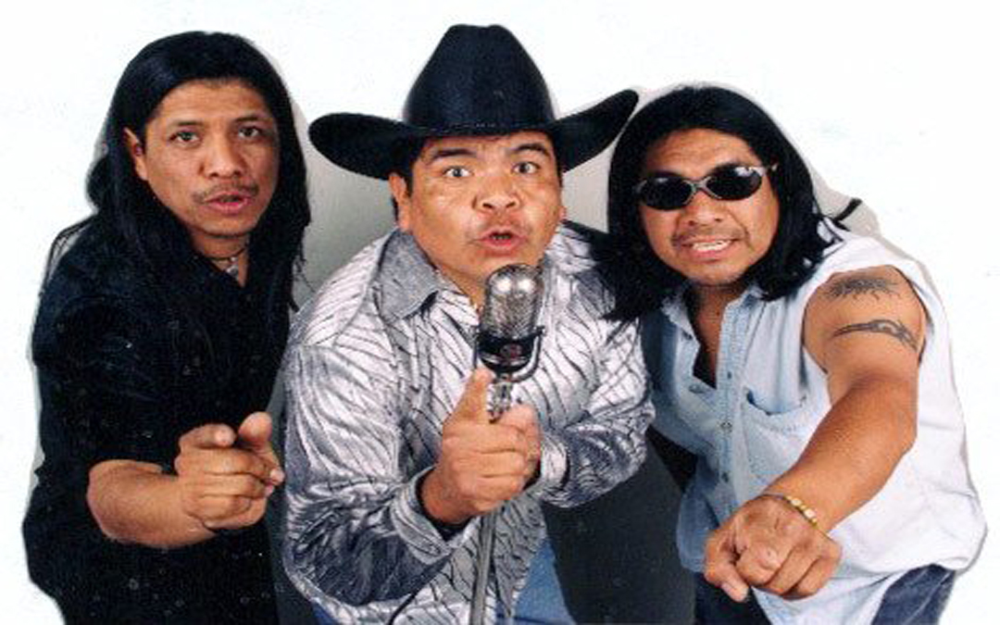

Tex Tex - Castillos Españoles
Historia De La Banda
Tex Tex es una banda de rock de México1 originaria de Ixtenco, Tlaxcala, conocidos también como "Los muñecos". Formada hacia 19863 por los hermanos Mujica, originarios del pueblo de San Juan Ixtenco, municipio de Tlaxcala. En esa época Everardo Mujica Lalo Tex, trabajaba en una empresa en el departamento de control de calidad y decidió abandonar ese empleo y cambiarlo por la música. Su estilo de Rock mezcla rythm & blues, corridos y ritmos latinos, al que llamaban "rock ejidal". En sus conciertos aparecen siempre con sombrero y look texano, reivindicando dicho concepto.